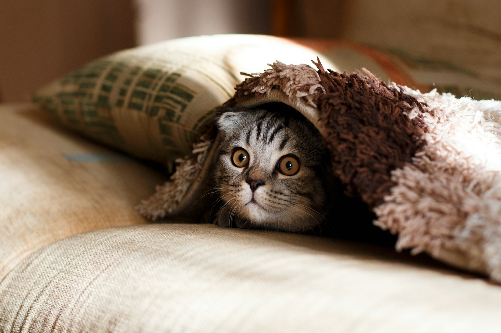

Quem somos
Somos uma equipe de fotógrafos apaixonados por capturar as conexões especiais entre as
pessoas e os seus animais de estimação.
Cada sessão de fotos é única, refletindo o amor e a
cumplicidade que tornam essa relação tão especial.
O nosso objetivo é transformar esses
momentos em memórias visuais inesquecíveis, com naturalidade e autenticidade.
Com anos de experiência, desenvolvemos uma sensibilidade para trabalhar tanto com pessoas
de qualquer idade, quanto com os seus companheiros de quatro patas, garantindo um ambiente
descontraído e acolhedor.
Sejam cães, gatos, furões, cabras, porcos, iguanas, ratos ou outros
animais, cada sessão é adaptada para que todos se sintam confortáveis e para que as
personalidades de cada um brilhem nas fotos.
Se você procura capturar a alegria e o vínculo que compartilha com seu fofinho, estamos aqui para transformar esses sentimentos em imagens eternas.
Vamos criar juntos recordações que você guardará para sempre!
